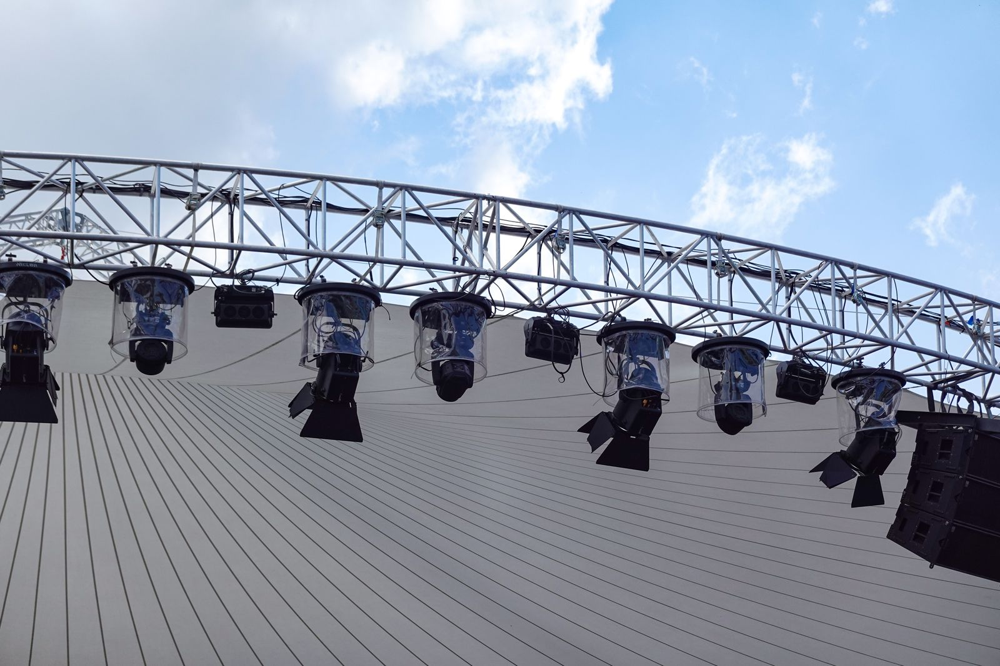

THE DESIGNER · ROSHNI BHANDARI, PUNE
Nobody learns this trade at a desk. You learn it behind one, in the dark, at 11 p.m.
Roshni Bhandari designs light and sound for festival main stages and night processions, and calls shows from the desk she plotted. Nine seasons, thirty-four stages, one working rule: the load sheet is signed before the first fixture is hung.
Followspot first
I started in 2016 on a followspot at a Pune theatre — the coldest seat in the building and the best education in it, because a followspot operator learns the only lesson that matters: the performer cannot see you, the audience must never notice you, and the cue does not wait.
From the spot I moved to the desk of a touring dance company, calling cues I hadn't written and learning why the good ones are written the way they are. My first festival plot was in 2019 — a second stage, a borrowed rig, a distro shared with a food court, which is where the power budget stopped being an abstraction. Since then the practice has grown the way it should: one stage at a time, each plot filed, each mistake kept in the record where it can teach.
Sound came in sideways, the way it does: festivals kept handing me the whole stage, and a lighting designer who cannot read a system plot is only doing half the job. I trained into system design and alignment, and now take sound design as a separate, separately-credited service — never bundled invisibly into a lighting fee, never claimed where I didn't do it.

How a design runs
Five passes, in this order, every time. The power audit comes before the plot because the plot is only allowed to want what the site can feed.
- 01Site survey & power audit
I walk the site in daylight with the festival's electrician: distro sizes, cable runs, truss positions, the audience's sightlines and the neighbours' windows. The audit produces the budget — the number every later decision answers to.
- 02The plot
Fixtures placed on paper, channels assigned, colours chosen against the acts actually booked — not against a mood board. Rigging loads and cable paths are drawn at the same sitting, with the rigger's rules as constraints, not comments.
- 03The load sheet
Every cue summed before it exists. The sheet is the document the site electrician signs, and it is where overloads are caught — in programming week, on paper, where they are cheap. (Case File 02 is this step, working as intended.)
- 04Programming
At the desk, with the rig live, cues built in running order and faded by ear as much as by eye. Artists' LDs are welcome at the desk — their looks are built as cues in the sheet, and summed like everyone else's.
- 05Show-calling
On the night I call my own plots: standby, warn the crew, GO. When weather or failure cuts the show, the re-cut happens at the desk, from the cue sheet, in the open — see Case File 03.
The honesty page
Light is noticed when it's wrong. That single fact arranges the credit on every production I touch, and it is printed here so it never has to be negotiated.
- The show belongs to its artists. My name goes on the plot, the cue sheet and the load sheet — the documents — not on the performance. Registers on this site state my role per production (design, sound only, calling only) and never blur them.
- The festival keeps its stage. A production in my case files is the festival's production; I was its designer. Photographs on this site are credited reference frames of other people's stages, labelled as such every time.
- Failures stay in the record. A mover drowned in the rain and a finale cue that would have tripped a distro are filed on the projects page at the same size as the successes, because a record with the failures removed is advertising, not a record.
- Power is finite, and the plot says so. If a site's supply cannot carry a design, the design shrinks. The safety margin never does.
Terms & working law
The short version, printed before any booking — the long version is the contract, and it says the same things.
- Strobe policy — no exceptions. No strobe appears in any plot unless the festival publishes advance warning in its own show information, and strobe is never used as a surprise. Photosensitivity is treated as a design constraint, not a footnote: this website follows the same rule and contains no flashing content anywhere.
- Blinders are capped. Audience blinders run at a house cap of 80% and are never aimed along egress routes. A crowd dazzled on its way out is a safety failure wearing a lighting cue's clothes.
- Rigging and power at practice level. All rigging follows the venue's and the rigger's certified loads; all electrical work is signed off by the site electrician against the load sheet. I design within those signatures — I do not work around them.
- Weather terms. The design fee stands once programming has begun. Show days are charged as run: a rain-shortened night is one show day, a cancelled night is none. What the audience gets in a cut show is decided with the organiser, at the desk, on the night — Case File 03 shows how.
- Fees. The fee schedule and estimator on the desk page are the real basis of every quote. Travel is at cost, agreed before programming. No line appears in an invoice that was not in the estimate.